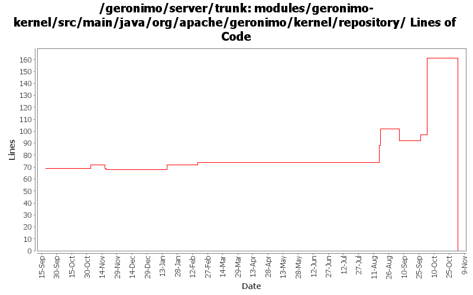

[root]/modules/geronimo-kernel/src/main/java/org/apache/geronimo/kernel/repository

| Author | Changes | Lines of Code | Lines per Change |
|---|---|---|---|
| Totals | 81 (100.0%) | 201 (100.0%) | 2.4 |
| djencks | 12 (14.8%) | 168 (83.6%) | 14.0 |
| jlaskowski | 3 (3.7%) | 18 (9.0%) | 6.0 |
| gawor | 1 (1.2%) | 7 (3.5%) | 7.0 |
| dain | 1 (1.2%) | 5 (2.5%) | 5.0 |
| gdamour | 5 (6.2%) | 2 (1.0%) | 0.4 |
| hogstrom | 1 (1.2%) | 1 (0.5%) | 1.0 |
| vamsic007 | 1 (1.2%) | 0 (0.0%) | 0.0 |
| prasad | 22 (27.2%) | 0 (0.0%) | 0.0 |
| kevan | 31 (38.3%) | 0 (0.0%) | 0.0 |
| jdillon | 4 (4.9%) | 0 (0.0%) | 0.0 |
GERONIMO-3565. Modules distributed amongst framework/modules and plugins
0 lines of code changed in 22 files:
GERONIMO-3496 assemble servers out of plugins
71 lines of code changed in 2 files:
let's close the zip file
7 lines of code changed in 1 file:
GERONIMO-3330 GERONIMO-3453 More changes. Plugin installer now installs stuff into config.xml, config-substitutions.properties, and external_aliases.properties. Car-maven-plugin more or less gets this stuff into the geronimo-plugin.xml.
8 lines of code changed in 1 file:
GERONIMO-3330 GERONIMO-3453 Use the new plugin schema Paul came up with. Use jaxb for geronimo-plugin xml handling. Modify the car-maven-plugin to generate geronimo-plugin.xml and explicitly specify the dependencies for the plan in pom.xml. This introduces several more jaxb libraries in lib which I hope can be removed again. Also the console plugin handling is barely working.
2 lines of code changed in 1 file:
GERONIMO-3422 provide per-db filtering of artifacts in db pool wizard.
21 lines of code changed in 1 file:
GERONIMO-3416, start on moving common bits of deployment test infrastructure into kernel test jar. Might also fix GERONMO-3415
63 lines of code changed in 3 files:
Improved error messages
1 lines of code changed in 1 file:
GERONIMO-2982 Prepend / to path url patterns in servlet mappings if missing. Also some much bigger changes to improve info in exception messages and some genericization
2 lines of code changed in 1 file:
Added additional diagnostic information that will allow the dependency chain to be visible for quicker problem diagnosis for build related issues.
1 lines of code changed in 1 file:
Second attempt to change the way the online/offline deployers and the JSR88
deployment driver work. The first attempt was breaking the TCK amd the
eclipse plugin.
Online deployer, i.e. deployer.jar, boots a Kernel to load its dependencies,
e.g. geronimo-deploy-tool, and registers the available ModuleConfigurers with
the DeploymentManager.
ModuleConfigurers to be registered are loaded by the persistent configuration
list jsr88-configurer-config.xml.
In the case of an offline deployment, the online deployer starts the
offline-deployer configuration within the same Kernel. In turn, the
offline-deployer configuration starts a list of configurations to register
the available module builders.
Add a log4j configuration for the online deployer.
DeploymentFactoryBootstrapper is the new JSR88 deployment driver. It boots a
kernel; starts the configuration list jsr88-configurer-config.xml; retrieves
the "actual" DeploymentFactory implementation from the kernel; and delegates
to this retrieved imoplementation.
The JSR88 JAR driver is now named jsr88-deploymentfactory.jar.
This fixes:
* GERONIMO-2794 - Improve online deployer to register ModuleConfigurers from the repository; and
* GERONIMO-2767 - Minimize side effects of the offline deployer
2 lines of code changed in 5 files:
Initial openejb3 integration
5 lines of code changed in 1 file:
Source cleanup: removed unnecessary import statements.
0 lines of code changed in 1 file:
GERONIMO-2537 Update the src headers in server/trunk/modules to be compliant with the new ASF src header and copyright policy (http://www.apache.org/legal/src-headers.html). I also did some cleanup of the src headers and tried to make them all a consistent format
0 lines of code changed in 31 files:
Partial fix for GERONIMO-2537 All Geronimo source files must be brought in line with the new ASF source header and copyright notice policy
The modules directory is supposed to be migrated. There're some issues with some files, but they'll be handled manually
18 lines of code changed in 3 files:
Drop unused imports
0 lines of code changed in 2 files:
Minor, fixed spacing
0 lines of code changed in 2 files:
GERONIMO-2409 Provide aliasing for configurations. Works surprisingly well: I expected something similar would be needed for Configuration and Kernel gbean lookups
0 lines of code changed in 2 files: